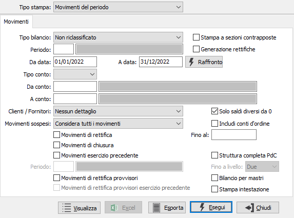
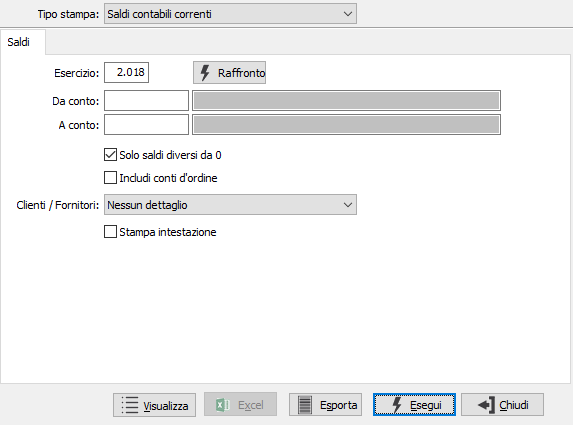
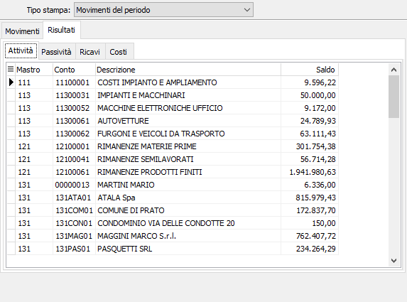

Stampa bilancio corrente
Il programma esegue l'elaborazione e la stampa o l'esportazione in vari formati dei bilanci correnti di OS1. È possibile ottenere stampe non riclassificate, intendendosi con questo termine la totalizzazione dei saldi dei vari sottoconti nel loro mastro, prescindendo dal segno (ad esempio, date due banche rispettivamente con saldo dare e saldo avere, i sottoconti verranno stampati in ordine di codice ed il mastro presenterà come saldo la somma algebrica dei due sottoconti) oppure riclassificate, in cui i sottoconti vengono posizionati in Attivo o Passivo e in Costi o Ricavi in funzione del segno del loro saldo.
In base ai parametri inseriti, sono possibili diversi layout di stampa, con o senza calcolo dell'IRES e dell'IRAP.
In base al Tipo di stampa inserito, si ottiene un bilancio aggiornato all'ultima registrazione inserita (tipo stampa Saldi contabili correnti) con una veloce elaborazione perché i valori vengono prelevati dalla tabella progressivi contabili per anno; viceversa, un bilancio parziale relativo alle due date inserite (tipo stampa Movimenti nel periodo) con un'elaborazione più lunga perché devono essere esaminate e totalizzate le scritture contabili comprese fra le due date inserite.
Movimenti del periodo

TIPO STAMPA: Valori ammessi:
Saldi contabili correnti: dati correnti aggiornati all'ultimo movimento contabile;
Movimenti nel periodo, da data a data inserite dall'operatore.
TIPO BILANCIO: Valori ammessi:
Non riclassificato: il conto viene inserito nella sezione di bilancio (Attività, Passività. Costi, Ricavi) indicata a livello di sottoconto (o a livello di mastro per i clienti/fornitori), a prescindere dal segno del saldo (ad esempio, date due banche (per le quali il campo "Tipo Conto" è stato impostato ad "Attività") rispettivamente con saldo dare e saldo avere, vengono presentate entrambe nella sezione Attività ed il mastro presenterà come saldo la somma algebrica dei due sottoconti).
Riclassificato: il sottoconto viene inserito nella sezione di bilancio sia in base all'impostazione presente in anagrafica che al saldo per cui nell'esempio precedente la banca con segno positivo viene presentata nella sezione di appartenenza (Attività) mentre la banca con segno negativo viene presentata nella sezione opposta (Passività).
Riclassificato con il calcolo dell'IRES e dell'IRAP: stessa elaborazione del caso precedente ma con l'aggiunta in coda alla stampa del prospetto del calcolo teorico di IRAP e IRES.
Dettaglio Costi/Ricavi IRAP/IRES: in entrambi i casi viene stampato solo il conto economico ed il valore indicato per ciascun conto è il valore utilizzabile ai fini fiscali (IRAP/IRES), cioè il saldo derivante dai movimenti contabili rapportato alla percentuale di assoggettamento IRAP o di indetraibilità IRES.
STAMPA A SEZIONI CONTRAPPOSTE: check box per determinare il formato del bilancio. Valori ammessi:
spunta = stampa a sezioni contrapposte; per questo formato è prevista l'esportazione in Excel e l'apposito pulsante, in basso, sarà attivo;
vuoto = stampa a sezioni divise; per questo formato è prevista la visualizzazione e l'apposito pulsante, in basso, sarà attivo.
GENERAZIONE RETTIFICHE: se presente la spunta e compilato il periodo definisce di generare automaticamente le rettifiche; viene automaticamente attivato anche il flag “Movimenti di rettifica provvisori” per includere tali movimenti nel bilancio.
PERIODO: inserire il periodo per cui si desidera effettuare la stampa. L'inserimento del periodo determina la valorizzazione delle date di stampa. Sul campo sono attive le funzioni di ricerca (F9) sulla tabella stessa.
DA DATA: significativa in caso di Tipo stampa Movimenti del periodo. Indicare la data dalla quale si desidera iniziare l'elaborazione del bilancio. Se la data di inizio viene confermata a vuoto la lettura dei movimenti inizia dalla data di inizio dell'esercizio corrente.
A DATA: significativa in caso di Tipo stampa Movimenti nel periodo. Indicare la data alla quale si desidera terminare l'elaborazione del bilancio.
RAFFRONTO: premendo questo pulsante si accede ad una finestra in cui è possibile inserire un eventuale periodo di raffronto; se presente, sul bilancio viene aggiunta una colonna con il valore relativo al periodo di raffronto e la percentuale di scostamento. Solo nella stampa del bilancio a sezioni contrapposte queste colonne relative al raffronto non appaiono.
TIPO CONTO: combo box per definire la tipologia di sottoconto da stampare. Valori ammessi: Sottoconto; Clienti, Fornitori.
DA CONTO: inserire, nel caso di bilanci relativi solo a taluni conti, il codice del sottoconto del piano dei conti dal quale si desidera iniziare la stampa.
A CONTO: inserire, nel caso di bilanci relativi solo a taluni conti, il codice del sottoconto del piano dei conti al quale si desidera terminare la stampa.
CLIENTI / FORNITORI: combo box per definire il trattamento in stampa di clienti e fornitori. Valori possibili: Nessun dettaglio (viene stampato il totale di mastro per i clienti e i fornitori); Dettaglio clienti e fornitori (viene stampato il dettaglio dei clienti e dei fornitori); Stampa solo clienti; Stampa solo fornitori.
SOLO SALDI DIVERSI DA 0: Valori possibili:
vuoto = stampa gli importi dare/avere per conto (stampa tutti i conti movimentati);
spunta = stampa solo i saldi di ogni conto (stampa solo i conti con saldo diverso da 0).
INCLUDI CONTI D'ORDINE: Valori possibili:
vuoto = non include nell'elaborazione i conti d'ordine;
spunta = include nell'elaborazione i conti d'ordine.
MOVIMENTI SOSPESI: combo box significativo solo per la versione Enterprise che prevede tale tipo di movimenti. Valori ammessi: Considera tutti i movimenti; Escludi i movimenti sospesi; Considera solo i movimenti sospesi.
MOVIMENTI DI RETTIFICA: check box per definire il criterio di trattamento delle scritture di rettifica relative all'esercizio precedente ma registrate con data dell'esercizio in corso. Valori possibili:
vuoto = non vengono considerati i movimenti relativi alle scritture di rettifica dell'esercizio al quale si riferisce il primo limite di data;
spunta = vengono considerati i movimenti relativi alle scritture di rettifica dell'esercizio al quale si riferisce il primo limite di data, solo se il secondo limite di data coincide con la data di fine esercizio.
FINO AL: eventuale data per indicare il limite massimo di data entro il quale considerare le scritture di rettifica.
MOVIMENTI DI CHIUSURA: check box per definire i criteri di trattamento dei movimenti di chiusura effettuati con l'apposita causale, al fine di ottenere un bilancio significativo anche dopo le chiusure. Ha senso in caso di ristampa bilanci di esercizi precedenti già chiusi. Valori possibili:
vuoto = non vengono considerati i movimenti di chiusura relativi all'esercizio al quale si riferisce il primo limite di data;
spunta = vengono considerati i movimenti di chiusura relativi all'esercizio al quale si riferisce il primo limite di data.
MOVIMENTI ESERCIZIO PRECEDENTE: check box significativo in situazione di doppio esercizio, prima dell'apertura dell'esercizio in corso. Valori possibili:
vuoto = non considera i saldi al 31.12 esercizio precedente dei sottoconti patrimoniali;
spunta = relativamente ai conti patrimoniali, vengono considerati anche i movimenti dell'esercizio precedente.
PERIODO: attivo solo se spuntata la casella "Movimenti esercizio precedente"; inserire l'eventuale periodo relativo all'esercizio precedente. Sul campo sono attive le funzioni di ricerca (F9) sulla tabella stessa.
MOVIMENTI DI RETTIFICA PROVVISORI: check box significativo solo per la versione Enterprise che prevede tale tipo di movimenti. Valori ammessi:
vuoto = non vengono considerate le rettifiche provvisorie;
spunta = vengono considerate le rettifiche provvisorie.
MOVIMENTI DI RETTIFICA PROVVISORI ESERCIZIO PRECEDENTE: attivo solo se spuntata la casella "Movimenti esercizio precedente" e significativo solo per la versione Enterprise che prevede tale tipo di movimenti. Valori ammessi:
vuoto = non vengono considerate le rettifiche provvisorie del periodo precedente;
spunta = vengono considerate le rettifiche provvisorie del periodo precedente.
STRUTTURA COMPLETA PDC: attivo solo nel caso di stampa bilancio a sezioni divise permette di visualizzare tutta la struttura del piano dei conti.
FINO A LIVELLO: attivo se il parametro "Struttura completa piano dei conti" è spuntato; è possibile specificare fino a quale livello di mastro, in relazione a quelli configurati, devono essere incluse le relative voci nella stampa del bilancio.
BILANCIO PER MASTRI: definisce se si intende effettuare la stampa del bilancio solo per totali di mastro.
STAMPA INTESTAZIONE: indica se deve essere stampata come prima pagina del report una pagina contenente tutte le informazioni inerenti i criteri di selezione specificati per il report stesso (casella con segno di spunta).
Saldi contabili correnti

ESERCIZIO: indica l'esercizio per cui effettuare la stampa.
RAFFRONTO: premendo questo pulsante si accede ad una finestra in cui è possibile inserire un eventuale periodo di raffronto; se presente, sul bilancio viene aggiunta una colonna con il valore relativo al periodo di raffronto e la percentuale di scostamento. Solo nella stampa del bilancio a sezioni contrapposte queste colonne relative al raffronto non appaiono.
DA CONTO: inserire, nel caso di bilanci relativi solo a taluni conti, il codice del sottoconto del piano dei conti dal quale si desidera iniziare la stampa.
A CONTO: inserire, nel caso di bilanci relativi solo a taluni conti, il codice del sottoconto del piano dei conti al quale si desidera terminare la stampa.
SOLO SALDI DIVERSI DA 0: Valori possibili:
vuoto = stampa gli importi dare/avere per conto (stampa tutti i conti movimentati);
spunta = stampa solo i saldi di ogni conto (stampa solo i conti con saldo diverso da 0).
INCLUDI CONTI D'ORDINE: Valori possibili:
vuoto = non include nell'elaborazione i conti d'ordine;
spunta = include nell'elaborazione i conti d'ordine.
CLIENTI / FORNITORI: combo box per definire il trattamento in stampa di clienti e fornitori. Valori possibili: Nessun dettaglio (viene stampato il totale di mastro per i clienti e i fornitori); Dettaglio clienti e fornitori (viene stampato il dettaglio dei clienti e dei fornitori); Stampa solo clienti; Stampa solo fornitori.
STAMPA INTESTAZIONE: indica se deve essere stampata come prima pagina del report una pagina contenente tutte le informazioni inerenti i criteri di selezione specificati per il report stesso (casella con segno di spunta).
La pressione del bottone Esegui determina l'esecuzione della stampa; premendo Esporta viene richiesto un nome file ed esportato il bilancio su file di testo; se impostato il bilancio a sezioni contrapposte premendo il pulsante Excel, che sarà attivo, il bilancio viene esportato in Excel; se impostato il bilancio a sezioni divise premendo il pulsante Visualizza, che sarà attivo, viene mostrata la seguente pagina all'interno della finestra:

La pagina contiene altre pagine, una per ogni tipologia di voce primaria del bilancio (Attivo, Passivo, ecc.) ed in ogni pagina sono presenti i conti ed i relativi valori, compresi i valori di raffronto e la percentuale di scostamento se è stato inserito il periodo di raffronto; ogni griglia di ogni pagina può essere esportata tramite il menù associato al tasto destro del mouse; inoltre con il doppio clic del mouse su un qualsiasi rigo della griglia delle varie pagine si accede all'analisi sottoconto del conto presente sul rigo.